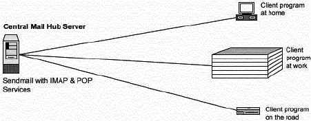
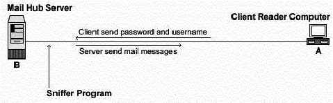
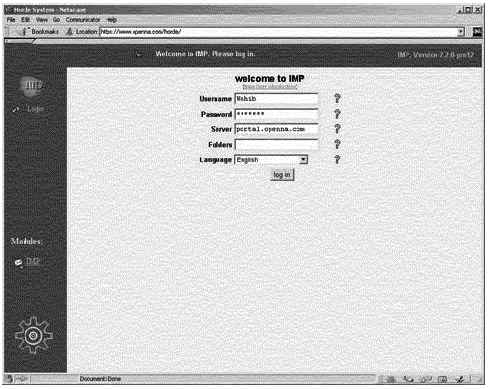

L
i n u x P a r
k
при
поддержке ВебКлуба |
Глава 15 Серверное программное обеспечение (Почтовый сервис) -
Sendmail (часть 1)В этой главе
Linux Sendmail
сервер
Конфигурации
Организация
защиты Sendmail
Утилиты
администратора Sendmail
Утилиты
пользователя Sendmail
Linux Imap и
Pop сервер
Конфигурации
Настройка Imap
и POP для использования с TCP-Wrappers inetd супер сервером
Организация
защиты IMAP/POP
|
|
Краткий обзор
Если вы настроили Sendmail как Центральный Почтовый
Концентратор, вы должны инсталлировать IMAP/POP программное обеспечение или вы
не сможете воспользоваться преимуществами вашего почтового Linux сервера, так
как Sendmail занимается только пересылкой почты с одной на другую машину.
Почтовый сервер – это сервер на котором запущено одно или более из следующего:
IMAP сервер, POP3 сервер, POP2 сервер или SMTP сервер.
Примером SMTP сервера может служить Sendmail, который мы уже
проинсталлировали на нашем Linux сервере, как Центральный Почтовый Концентратор.
Далее мы попытаемся охватить инсталляцию IMAP4, POP3 и POP2, которые входят в
один пакет.
С IMAP & POP программами, почтовая программа удаленного
“клиента” может получить доступ к сообщению хранящемся на почтовом сервере, как
будто он находится на этом сервере. Например, почта присылается и запоминается
на IMAP сервере для пользователя, который может манипулировать ею из его/ее
компьютера дома, в офисе и т.д., без необходимости пересылки сообщений или
файлов между этими компьютерами.
POP сокращение для “Post Office Protocol” и просто позволяет
вам просматривать список сообщений, принимать и удалять их. IMAP - это POP на
стероидах. Он позволяет вам легко манипулировать бюджетами, разрешать доступ
нескольких людей к одному бюджету, оставлять сообщения на сервере, скачивая
только их заголовки, тела, без присоединенных файлов или с ними. IMAP идеален
для всех кому серьезно нужна почта. По умолчанию POP и IMAP сервера, которые
поставляются с большинством дистрибутивов делают больше, чем нужно.

Эти инструкции предполагают.
Unix-совместимые
команды.
Путь к исходным кодам “/var/tmp” (возможны другие
варианты).
Инсталляция была проверена на Red Hat Linux 6.1 и 6.2.
Все шаги
инсталляции осуществляются суперпользователем “root”.
IMAP версии
4.7c
Пакеты.
Домашняя страница IMAP/POP: http://www.washington.edu/imap/
FTP сервер IMAP/POP: 140.142.3.227 или 140.142.4.227
Вы должны
скачать: imap.tar.Z
Предварительные условия.
Sendmail сервер должен быть
уже установлен на вашей системе.
Тарболы.
Хорошей идеей будет создать список файлов установленных в вашей
системе до инсталляции Sendmail и после, в результате, с помощью утилиты diff вы
сможете узнать какие файлы были установлены. Например,
До
инсталляции:
find /* > Imap1
После инсталляции:
find /* >
Imap2
Для получения списка установленных файлов:
diff Imap1 Imap2 > Imap-Installed
Раскроем тарбол (tar.Z).
[root@deep /]# cp imap.tar.Z /var/tmp
[root@deep /]# cd
/var/tmp
[root@deep tmp]# tar xzpf imap.tar.Z
Компиляция и оптимизация.
Перейдите в новый IMAP/POP каталог и введите следующие команды
на вашем терминале:
Шаг 1
Редактируйте файл Makefile (vi +719 src/osdep/unix/Makefile) и
измените следующую строку:
sh -c '(test -f /usr/include/sys/statvfs.h -a $(OS) != sc5 -a
$(OS) != sco) && $(LN) flocksun.c flockbsd.c || $(LN) flocksv4.c
flockbsd.c'
Должна быть:
sh -c '(test
-f /usr/include/sys/statvfs.h -a $(OS) != sc5 -a $(OS) != sco -a $(OS) != lnx)
&& $(LN) flocksun.c flockbsd.c || $(LN) flocksv4.c
flockbsd.c'
Эта модификация изменит файл “sys/stavfs”. Этот файл, с новой
glibc 2.1 из Linux отличается от доступной на Sun.
Редактируйте файл Makefile (vi +354 src/osdep/unix/Makefile) и
измените следующую строку:
BASECFLAGS="-g
-fno-omit-frame-pointer -O6 -DNFSKLUDGE" \
Должна быть:
BASECFLAGS="-g -fno-omit-frame-pointer -O9 -funroll-loops
-ffast-math -malign-double -mcpu= pentiumpro -march=pentiumpro
-fomit-frame-pointer -fno-exceptions -DNFSKLUDGE" \
Это наши оптимизационные флаги для компиляции программ IMAP/POP
на сервере.
Редактируйте файл Makefile (vi +61 src/osdep/unix/Makefile) и
измените следующие строки:
ACTIVEFILE=/usr/lib/news/active
Должна быть:
ACTIVEFILE=/var/lib/news/active
SPOOLDIR=/usr/spool
Должна быть:
SPOOLDIR=/var/spool
RSHPATH=/usr/ucb/rsh
Должна быть:
RSHPATH=/usr/bin/rsh
LOCKPGM=/etc/mlock
Должна
быть:
#LOCKPGM=/etc/mlock
“ACTIVEFILE=”строка определяет путь “активного” каталога для
IMAP/POP, “SPOOLDIR=”где вы разместите “spool” каталог Linux IMAP/POP,
“RSHPATH=”определяет путь каталога “rsh” на вашей системе. Важно заметить, что
мы не используем сервис rsh на нашем сервере, но даже в этом случае, мы должны
определить правильный путь до “rsh”.
Редактируйте файл Makefile (vi +89 src/osdep/unix/Makefile) и
измените строку:
CC=cc
Должна
быть:
CC=egcs
Эта строка определяет имя нашего GCC компилятора, который мы
будем использовать при компиляции программ IMAP/POP (в нашем случае
egcs).
Шаг 2
Сейчас мы должны компилировать и инсталлировать IMAP & POP
на почтовом сервере:
[root@deep imap-4.7c]# make
lnp
[root@deep imap-4.7c]# install -m 644 ./src/ipopd/ipopd.8c
/usr/man/man8/ipopd.8c
[root@deep imap-4.7c]# install -m 644
./src/imapd/imapd.8c /usr/man/man8/imapd.8c
[root@deep imap-4.7c]# install -s
-m 755 ./ipopd/ipop2d /usr/sbin
[root@deep imap-4.7c]# install -s -m 755
./ipopd/ipop3d /usr/sbin
[root@deep imap-4.7c]# install -s -m 755
./imapd/imapd /usr/sbin
[root@deep imap-4.7c]# install -m 644
./c-client/c-client.a /usr/lib
[root@deep imap-4.7c]# ln -fs
/usr/lib/c-client.a /usr/lib/libimap.a
[root@deep imap-4.7c]# mkdir -p
/usr/include/imap
[root@deep imap-4.7c]# install -m 644 ./c-client/*.h
/usr/include/imap
[root@deep imap-4.7c]# install -m 644
./src/osdep/tops-20/shortsym.h /usr/include/imap
[root@deep imap-4.7c]# chown
root.mail /usr/sbin/ipop2d
[root@deep imap-4.7c]# chown root.mail
/usr/sbin/ipop3d
[root@deep imap-4.7c]# chown root.mail
/usr/sbin/imapd
Вышеприведенные команды будут конфигурировать программу,
проверяя, что ваша система имеет необходимые библиотеки и способна выполнять
необходимые функции, компилирует все исходные файлы в исполняемые двоичные, и
затем, инсталлирует все двоичные и вспомогательные файлы в определенное
место.
Заметим, что команда “make lnp” будет настраивать программу под
вашу Linux систему с поддержкой Pluggable Authentication Modules (PAM) для
лучшей безопасности.
Команда “mkdir” создаст новый каталог с именем “imap” в
“/usr/include”. Этот новый каталог “imap” будет содержать все заголовочные файлы
связанные с программой imapd файлы “c-client/*” и “shortsym.h”.
Команда “chown” изменит владельца исполняемых программ
“ipop2d”, “ipop3d” и “imapd” на пользователя “root” и группу “mail”.
Команда “ln -fs” создаст символическую ссылку “libimap.a” к
файлу “c-client.a”, которая может потребоваться для некоторых других программ,
которые мы будем инсталлировать в будущем.
ЗАМЕЧАНИЕ. Из соображений безопасности, если вы
используете только imapd сервис, удалите двоичные файлы ipop2d и ipop3d. Тоже
верно и для ipopd; если вы используете только ipopd сервис, удалите исполняемый
файл imapd. Если же вы используете оба сервиса (imapd и ipopd), то оставьте оба
двоичных файла.
Очистка после работы
[root@deep /]# cd
/var/tmp
[root@deep tmp]# rm -rf imap-version/ imap.tar.Z
Команды “rm” будет удалять все файлы с исходными кодами,
которые мы использовали при компиляции и инсталляции IMAP/POP. Также будет
удален сжатый архив IMAP/POP из каталога “/var/tmp”.
Все программное обеспечение, описанное в книге, имеет
определенный каталог и подкаталог в архиве “floppy.tgz”, включающей все
конфигурационные файлы для всех программ. Если вы скачаете этот файл, то вам не
нужно будет вручную воспроизводить файлы из книги, чтобы создать свои файлы
конфигурации. Скопируйте файл связанные с IMAP/POP из архива, измените их под
свои требования и поместите в нужное место так, как это описано ниже. Файл с
конфигурациями вы можете скачать с адреса: http://www.openna.com/books/floppy.tgz
Для запуска IMAP/POP сервера следующие файлы должны быть
созданы или скопированы в нужный каталог:
Копируйте файл imap в каталог “/etc/pam.d/”, если вы планируете
использовать imapd сервис.
Копируйте файл pop в каталог “/etc/pam.d/”, если
вы планируете использовать popd сервис.
Вы можете взять эти файлы из нашего архива floppy.tgz.
Конфигурация файла “/etc/pam.d/imap”
Сконфигурируем ваш файл “/etc/pam.d/imap” для использования pam
аутентификации.
Создайте файл imap (touch /etc/pam.d/imap) и добавьте в
него:
#%PAM-1.0
auth required /lib/security/pam_pwdb.so shadow nullok
account required /lib/security/pam_pwdb.so
ЗАМЕЧАНИЕ. Этот файл нужен, если вы хотите использовать IMAP
сервис.
Конфигурация файла “/etc/pam.d/pop”.
Сконфигурируем ваш файл “/etc/pam.d/pop” для использования pam
аутентификации.
Создайте файл pop (touch /etc/pam.d/pop) и добавьте в
него:
#%PAM-1.0
auth required /lib/security/pam_pwdb.so shadow nullok
account required /lib/security/pam_pwdb.so
ЗАМЕЧАНИЕ. Этот файл нужен, если вы хотите использовать
POP сервис.
Tcp-wrappers берет на себя заботу о запуске и остановке IMAP
или POP серверов. При запуске, inetd читает конфигурационную информацию из файла
“/etc/inetd.conf”. Этот файл содержит поля разделяемые символами табуляции или
пробелами.
Шаг 1
Редактируйте файл inetd.conf (vi /etc/inetd.conf) и добавьте
или раскомментируйте строки, связанные с сервисами, которые вы хотите включить.
Если вы хотите использовать IMAP тогда раскомментируйте строку, связанную с ним,
если же вы хотите использовать POP, тогда раскомментируйте его вместо IMAP. В
нашем примере мы используем IMAP сервис.
#pop-2 stream tcp nowait root /usr/sbin/tcpd ipop2d
#pop-3 stream tcp nowait root /usr/sbin/tcpd ipop3d
imap stream tcp nowait root /usr/sbin/tcpd imapd
Не забудьте после обновления вашего файла “inetd.conf” послать
процессу inetd сигнал SIGHUP (killall -HUP inetd).
Чтобы изменения вступили в
силу перезапустите процесс inetd, используя следующую команду:
[root@deep /root]# killall -HUP inetdШаг
2
Если вы хотите инсталлировать IMAP/POP сервер обслуживания
ограниченного числа известных реальных IP адресов клиентов, то можно
использовать возможности tcp-wrapper-а. Если вы планируете обслуживать dial-up
клиентов или сервис Webmail, тогда вы не сможете использовать эти
возможности.
Редактируйте файл hosts.deny (vi /etc/hosts.deny) и добавьте
следующую строку:
ALL: ALL@ALL, PARANOID
Которая говорит, что все сервисы, все месторасположения
клиентов будут заблокированы, пока не будет непосредственного разрешения в файле
“hosts.allow”.
Редактируйте файл hosts.allow (vi /etc/hosts.allow) и добавьте
следующую строку:
imapd: 216.209.228.34
my.domain.com
Которая говорит, что только клиентам с IP адресом
“216.209.228.34” и именем хоста “my.domain.com” будет разрешен доступ к IMAP
сервису на сервере.
Действительно ли вам нужен
IMAP/POP сервисы?
Знайте, что IMAP/POP программы используют по умолчанию пароли в
текстовом формате. Любой, кто запустит сниффер на вашей сети сможет перехватить
имя/пароль и использовать их для подключения к серверу. Проверьте вашу
конфигурацию, и если вы используете внешний/удаленный IMAP/POP сервер, то
деинсталлируйте IMAP/POP с вашей системы.

Использование SSL с IMAP/POP
К сожалению из-за экспортных ограничений правительства США,
IMAP с поддержкой SSL сейчас не доступен. Существуют пакеты предоставляемые
третьими производителями, которые позволяют использовать сессии IMAP и POP3
через SSL. Одним из них является WebMail IMP, Веб интерфейс которого позволяет
читать почту через Интернет, используя Веб броузер. WebMail IMP использует
протокол SSL для шифрования трафика с IMAP/POP сервером. Смотрите главу 20 “Опциональные
компоненты устанавливаемые с веб-сервером Apache” для получения большей
информации по этой теме.

Дополнительная документация.
Для получения более подробной информации вы можете прочитать
следующие страницы руководства:
$ man imapd (8C) – сервер Internet Message Access Protocol
(IMAP)
$ man ipopd (8C) – сервер Post Office Protocol (POP)
Инсталлированные файлы
> /etc/pam.d/imap
> /etc/pam.d/pop
> /usr/include/imap
> /usr/include/imap/dummy.h
> /usr/include/imap/env.h
> /usr/include/imap/env_unix.h
> /usr/include/imap/fdstring.h
> /usr/include/imap/flstring.h
> /usr/include/imap/fs.h
> /usr/include/imap/ftl.h
> /usr/include/imap/imap4r1.h
> /usr/include/imap/linkage.h
> /usr/include/imap/lockfix.h
> /usr/include/imap/mail.h
> /usr/include/imap/mbox.h
> /usr/include/imap/mbx.h
> /usr/include/imap/mh.h
> /usr/include/imap/misc.h
> /usr/include/imap/mmdf.h
> /usr/include/imap/mtx.h
> /usr/include/imap/mx.h
> /usr/include/imap/netmsg.h
> /usr/include/imap/news.h
> /usr/include/imap/newsrc.h
> /usr/include/imap/nl.h
> /usr/include/imap/nntp.h
> /usr/include/imap/os_a32.h
> /usr/include/imap/os_a41.h
> /usr/include/imap/os_aix.h
> /usr/include/imap/os_aos.h
> /usr/include/imap/os_art.h
> /usr/include/imap/os_asv.h
> /usr/include/imap/os_aux.h
> /usr/include/imap/os_bsd.h
> /usr/include/imap/os_bsi.h
> /usr/include/imap/os_cvx.h
> /usr/include/imap/os_d-g.h
> /usr/include/imap/os_do4.h
> /usr/include/imap/os_drs.h
> /usr/include/imap/os_dyn.h
> /usr/include/imap/os_hpp.h
> /usr/include/imap/os_isc.h
> /usr/include/imap/os_lnx.h
> /usr/include/imap/os_lyn.h
> /usr/include/imap/os_mct.h
> /usr/include/imap/os_mnt.h
> /usr/include/imap/os_nxt.h
> /usr/include/imap/os_os4.h
> /usr/include/imap/os_osf.h
> /usr/include/imap/os_ptx.h
> /usr/include/imap/os_pyr.h
> /usr/include/imap/os_qnx.h
> /usr/include/imap/os_s40.h
> /usr/include/imap/os_sc5.h
> /usr/include/imap/os_sco.h
> /usr/include/imap/os_sgi.h
> /usr/include/imap/os_shp.h
> /usr/include/imap/os_slx.h
> /usr/include/imap/os_sol.h
> /usr/include/imap/os_sos.h
> /usr/include/imap/os_sun.h
> /usr/include/imap/os_sv2.h
> /usr/include/imap/os_sv4.h
> /usr/include/imap/os_ult.h
> /usr/include/imap/os_vu2.h
> /usr/include/imap/osdep.h
> /usr/include/imap/phile.h
> /usr/include/imap/pop3.h
> /usr/include/imap/pseudo.h
> /usr/include/imap/rfc822.h
> /usr/include/imap/smtp.h
> /usr/include/imap/tcp.h
> /usr/include/imap/tcp_unix.h
> /usr/include/imap/tenex.h
> /usr/include/imap/unix.h
> /usr/include/imap/utf8.h
> /usr/include/imap/shortsym.h
> /usr/lib/c-client.a
> /usr/lib/libimap.a
> /usr/man/man8/ipopd.8c
> /usr/man/man8/imapd.8c
> /usr/sbin/ipop2d
> /usr/sbin/ipop3d
> /usr/sbin/imapd